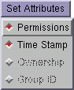

This menu allows you to set various attributes when files or directories are extracted from the archive.

Note that Ownership and Group ID are only set if you are the superuser.
Permissions, refer to the UNIX access permissions on the file.
Time Stamp, keeps the creation date of the file in the tar archive.
Ownership, sets the ownership of the extracted files to the same user IDs as appear in the file archive.
Group ID, maintains the same group ID on the file.